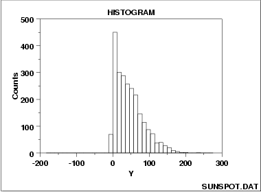

|
1. Exploratory Data Analysis 1.3. EDA Techniques 1.3.3. Graphical Techniques: Alphabetic 1.3.3.13. Histogram 1.3.3.13.6. Histogram Interpretation: Skewed (= Non-Normal) Right |
|
|
 |
|
|
A symmetric distribution is one in which
the 2 "halves" of the histogram
appear as approximate mirror-images of one another.
A skewed (= non-symmetric) distribution is a distribution in which there is no such
mirror-imaging.
For skewed distributions, it is quite common to have one tail of the distribution to be considerably "longer" or drawn out relative to the other tail. A "skewed right" distribution is one in which the tail is off to the right (= positive) direction. A "skewed left" distribution is one in which the tail is off to the left (= negative) direction. The above histogram is for a distribution that is skewed right. If a distribution is skewed, it should be noted as such--the histogram serves as an excellent graphical summary to point out such skewness. Further, there are quantitative consequences to skewed distributions which must be attended to; in particular, skewed distributions bring a certain philosophical complexity to the very process of estimating a "typical value" for the distribution. To be specific, suppose that the analyst has a collection of 100 values randomly drawn from a distribution, and wishes to summarize these 100 observations by a "typical value", then what does "typical value" even mean. If the distribution is symmetric, the "typical value" is unambiguous-- it is a well-defined "center" of the distribution. For example, for a bell-shaped symmetric distribution, such a center point is identical to that value where the peak (= the most probable value = the mode) of the distribution. For a skewed distribution, however, where is the "center" of the distribution? There is no "center" in the usual sense of the word. Be that as it may, several "typical value" metrics are often used for skewed distributions. The first metric is, as before, the mode of the distribution-- this is the most probable value of the distribution. For a unimodal (= 1 mode) distribution, the mode is the variate value where the peak occurs. Unfortunately, for severely-skewed distributions, the mode may be considerably shifted to the left or right and so it seems not to be a good representative of the "center" of the distribution. As a second choice, one could conceptually argue that the mean (= the "center of gravity" = the point on the horizontal axis where the distributiuon would balance) would serve well as the typical value. As a third choice, others may argue that the median (= that value on the horizontal axis which has exactly 50% of the data to the left (and also to the right) would serve as a good "typical value". For symmetric distributions, the conceptual problem disappears because at the population level the 3 choices (mode, mean, median) are all identical. For skewed distributions, however, these 3 metrics are markedly different. In practice, for skewed distributions, the most commonly reported "typical value" is the mean; the next most common is the median; the least common is the mode. Because each of these 3 metrics reflects a different aspect of "centerness", it is recommended that the analyst report at least 2 (mean and median), and preferably all 3 (mean, median, and mode) in summarizing and characterizing a data set.
Recommended Next Steps
2. Determine the best-fit distribution.
|
|